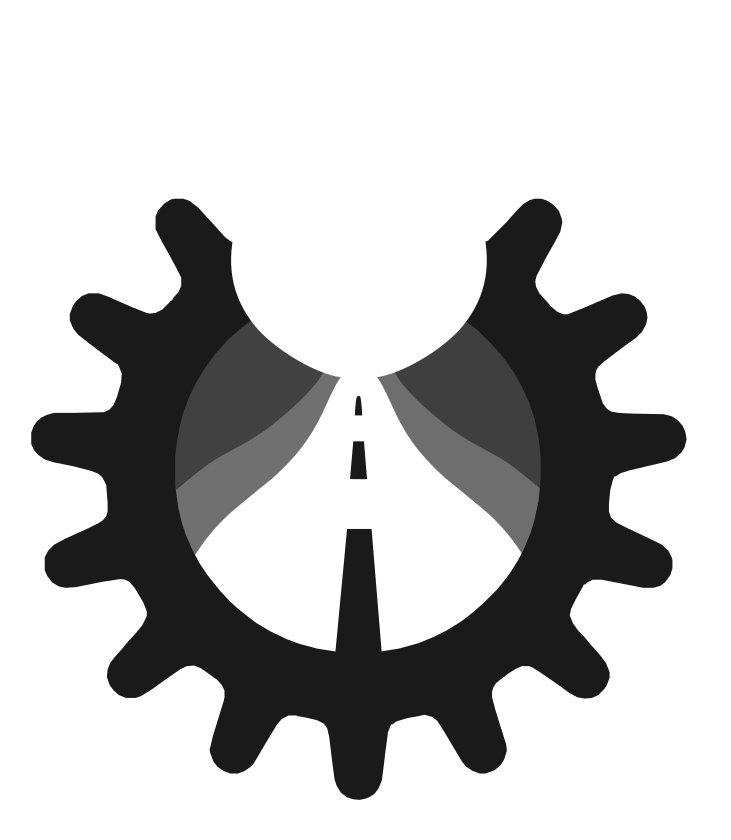
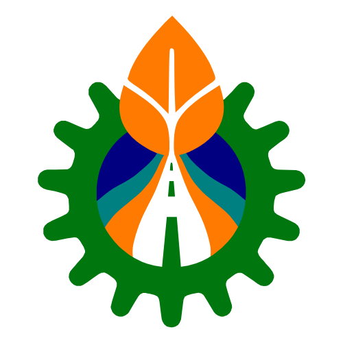
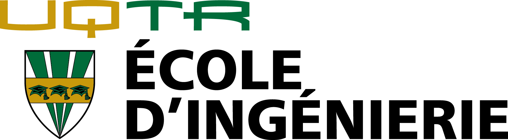

EN
☰
Université du Québec à Trois-Rivières

GreenTech Canada
Maple Engineering Group
TechNova Solutions
VisionEco Labs
Blue Horizon Ventures
EcoSphere Industries
Sustainify Inc.
EnviroFuture Foundation

